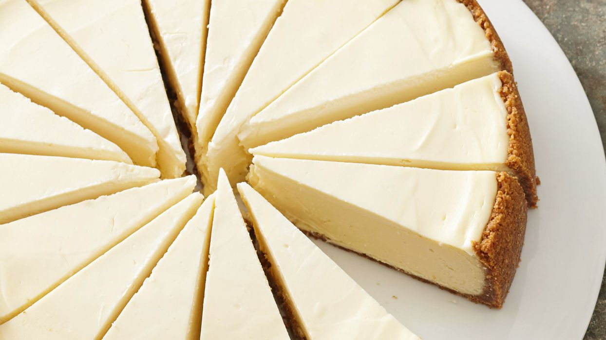

Cheesecake Recipe

Description:
Cheesecake is a decadent dessert known for its smooth, creamy texture and rich flavor. It typically features a dense, velvety filling that contrasts with a crumbly base. The dessert can be enjoyed in various flavors, often topped with fruits, sauces, or other garnishes, and is either baked or chilled to achieve its signature creamy consistency.
Ingredients:
For the Crust:
- 1/2 cups graham cracker crumbs
- 1/4 cup granulated sugar
- 1/2 cup unsalted butter, melted
For the Filling:
- 4 (8-ounce) packages cream cheese, softened
- 1 cup granulated sugar
- 1 teaspoon vanilla extract
- 4 large eggs
- 1 cup sour cream
- 1 cup heavy cream
For the Topping (optional):
- Fresh fruit, fruit sauce, or chocolate ganache
Steps:
- Preheat your oven to 325°F (163°C).
- In a medium bowl, combine graham cracker crumbs, sugar, and melted butter.
- Press the mixture evenly into the bottom of a 9-inch (23 cm) springform pan to form the crust.
- Bake in the preheated oven for 10 minutes, then remove and let cool.
- In a large mixing bowl, beat the softened cream cheese until smooth and creamy.
- Gradually add sugar and vanilla extract, beating until well combined.
- Add eggs one at a time, beating on low speed after each addition until just combined.
- Mix in sour cream and heavy cream until smooth.
- Pour the cream cheese mixture over the cooled crust in the springform pan.
- Smooth the top with a spatula.
- Bake in the preheated oven for 60-70 minutes, or until the center is set but still slightly jiggly. The edges should be firm and slightly golden.
- Turn off the oven and crack the oven door slightly. Let the cheesecake cool in the oven for 1 hour.
- After cooling, remove the cheesecake from the oven and refrigerate for at least 4 hours, or preferably overnight, to fully set.
- Before serving, top with fresh fruit, fruit sauce, or chocolate ganache if desired.
- Carefully remove the cheesecake from the springform pan and slice to serve.
Enjoy your homemade cheesecake!